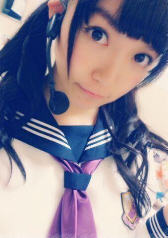
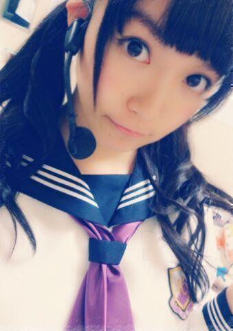

| 2013/09 15 Sun | ひめたん(*>ω<*)そ の342 |
この１週間バタバタしてて
なかなか時間ができなかったので
昨日の移動中にコメント一気読みしたー☆
ひ・め・か ではじまる自己紹介とか
めちゃ考えてくださってありがとー！
なのにブログで触れなくてごめんねー(´;ω;｀)
これからはできるだけタイムリーに
反応できるようにするねっ♪
みりりん (渡辺みり愛ちゃん)コメありがとー
みりりん大好きなった///

にゃああああああ！
氣志團万博！
乃木坂はじめましてのみなさん
一緒に盛り上がって下さって
とっても楽しかったです
乃木坂ファミリーのみなさん
とっても心強かったです
来てくださったみなさん
本当にありがとうございましたー＊＊
初のフェスだし
ステージも今までやったことないような
サイズだし構造だしで
このライブでいろんなこと学べたかなー
またちょっと成長できたかなーって思います！
氣志團のみなさん優しくしてくださって
もうっ本当にっ素敵な方たちでした(*^ω^*)
この日のためのオリジナル衣装
写め撮り忘れたああ
汗でキラキラの私たちでどうぞ許して？
うんっさーすが今日もみなさん
やーさーしーい ぺろ
ぺろ

今さらだけど北海道の夜公演の
編み込みくるくるツイン
けげんなかおしてるけど気にしなーい( ^ω^ )( ^ω^ )
るんるん (斎藤ちはるちゃん)ブログの
写めひめたんが意外と好評だった......
となるとひめたんは自撮りがヘタなのかな
それともみなさんと感覚が違うんかな
それともみなさんがお世辞を言ったのか。それだ！
今日はオフでしたー
そんで広島から姉さんが遊びに来てくれたので
三姉妹とままとフリータイムカラオケしたよー
みんな疲れちゃってラスト30分は妹無双だったよー
姉さんうた上手なんだよー
四姉妹って言ってあげたらまま喜ぶよ！
それからマッサージにも行きましたーん
充実した１日

 せいたん
(畠中清羅ちゃん)
せいたん
(畠中清羅ちゃん)
こちらこそパンプスありがとーっ
ままもとーても喜んでたよー
いつかお泊まりおいでーね
ひめたんがお部屋片付けるまで待っててね(〃ω〃)
まっちゅん
(松村沙友理ちゃん)
あんこちゃんめっちゃかわゆすううっ
ググって知ったーたまこまーけっとかあ！
さゆにゃん (井上小百合ちゃん)がたまこちゃんで
みんなで たまこまーけっとしよー(〃ω〃)
なかなか時間ができなかったので
昨日の移動中にコメント一気読みしたー☆
ひ・め・か ではじまる自己紹介とか
めちゃ考えてくださってありがとー！
なのにブログで触れなくてごめんねー(´;ω;｀)
これからはできるだけタイムリーに
反応できるようにするねっ♪
みりりん (渡辺みり愛ちゃん)コメありがとー
みりりん大好きなった///
にゃああああああ！
氣志團万博！
乃木坂はじめましてのみなさん
一緒に盛り上がって下さって
とっても楽しかったです
乃木坂ファミリーのみなさん
とっても心強かったです
来てくださったみなさん
本当にありがとうございましたー＊＊
初のフェスだし
ステージも今までやったことないような
サイズだし構造だしで
このライブでいろんなこと学べたかなー
またちょっと成長できたかなーって思います！
氣志團のみなさん優しくしてくださって
もうっ本当にっ素敵な方たちでした(*^ω^*)
この日のためのオリジナル衣装
写め撮り忘れたああ
汗でキラキラの私たちでどうぞ許して？
うんっさーすが今日もみなさん
やーさーしーい
ぺろ

今さらだけど北海道の夜公演の
編み込みくるくるツイン
けげんなかおしてるけど気にしなーい( ^ω^ )( ^ω^ )
るんるん (斎藤ちはるちゃん)ブログの
写めひめたんが意外と好評だった......
となるとひめたんは自撮りがヘタなのかな
それともみなさんと感覚が違うんかな
それともみなさんがお世辞を言ったのか。それだ！
今日はオフでしたー
そんで広島から姉さんが遊びに来てくれたので
三姉妹とままとフリータイムカラオケしたよー
みんな疲れちゃってラスト30分は妹無双だったよー
姉さんうた上手なんだよー
四姉妹って言ってあげたらまま喜ぶよ！
それからマッサージにも行きましたーん
充実した１日
せいたん
(畠中清羅ちゃん)
こちらこそパンプスありがとーっ
ままもとーても喜んでたよー
いつかお泊まりおいでーね
ひめたんがお部屋片付けるまで待っててね(〃ω〃)
まっちゅん
(松村沙友理ちゃん)
あんこちゃんめっちゃかわゆすううっ
ググって知ったーたまこまーけっとかあ！
さゆにゃん (井上小百合ちゃん)がたまこちゃんで
みんなで たまこまーけっとしよー(〃ω〃)

 ひめたんビーム党って
ひめたんビーム党って
党員募集ないんですかーー？
ではただいまから募集しましょう
加入条件はずばりッ「技」を持ってることだッッ
うちも、9/4は妹の誕生日で、
9/7は僕の誕生日と、まとまってます
よかったら、お祝い＆ひめたんビームしてください
おたおめーおめおめめ(< * ω * >)びーむ
ステキないちねんになりますようにっ
ステキな兄妹さん♪♪
ひめたん、いくならディズニー？ユニバ？？
どーっちだ！？
広島人はユニバ派が多いよねー
ひめたんはどっちかならディズニー派かなあー
どっちも行ったことあるよ∩^ω^∩
ひめたんは地元で行きつけのお店とかはあるの？
うーん......
なんかねー広島にいる時こそ
あんま外に出る子じゃなかったからねー
おともだちとよく行ったカラオケ店は
もうなくなってしまったらしい......
ひめたんの目標とする人って誰なのー??
憧れは宮崎あおいさん！
身近ならもうたーくさんいますよー( ^O^ )
 逆にひめたんはどんな告白をされたい？！
逆にひめたんはどんな告白をされたい？！
やっぱ広島弁かな？！
そこはこだわらないので
みんなどんどん告白してー/////え
 ライブの時浴びせられた
ライブの時浴びせられた
ひめたんビームのせいで大怪我したんだけど
どーすればいい？？
せいで、じゃないでしょ(｀・ω・´)
その大ケガはもう治らんよきっとー
至近距離で受けてしまったからね。よかったね♪
ひめたんはどんな乗り物に
よく乗ってたんですか？
チボリ公園での話ね？
１回だけ行ったことあるんだけど
そのときはちっちゃかったので
身長足りないーってのがあったなあー
メリーゴーランドとか乗ったの覚えてるよ( ω )*
自分もアクターズスクールに通っています。
応援コメントお願いしてもいいですか
今日発表会だったんよね？お疲れさまー(〃ω〃)
アクターで習うことは本当に大事なことだから
先生やスクールのみんなと一緒に
ステキな時間を過ごしてね☆
イベントとかスクール内のオーディションとか
ひとつひとつを大切にしてほしいです
私もみんなにとって自慢の存在になれるよう
一生懸命頑張りますっ！
この前会社行って
お手紙、プレゼント、色紙
受けとりました＼( ^O^ )／
本当にありがとう大事にします大好きちゅ/////
今夜の乃木どこひめたん出るよー
めっちゃ笑ってます
さらさらストレートです
お見逃しなくっ
そして告知忘れんかったぞ
みんなーいーこいーこしてー♪

(＊´・ω・＊)
コメント(315)
2013/09/15 23:18